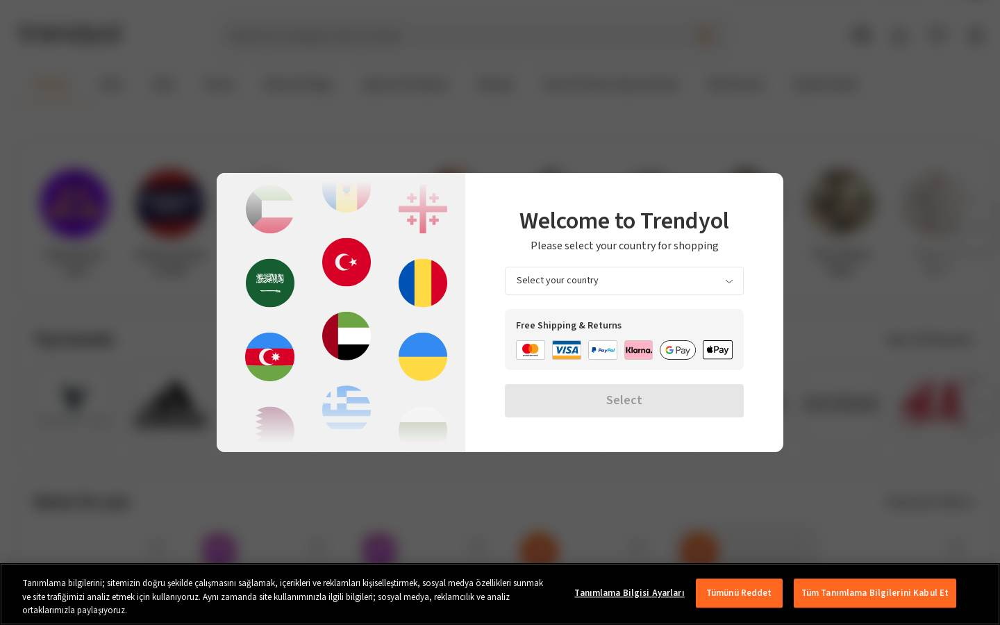
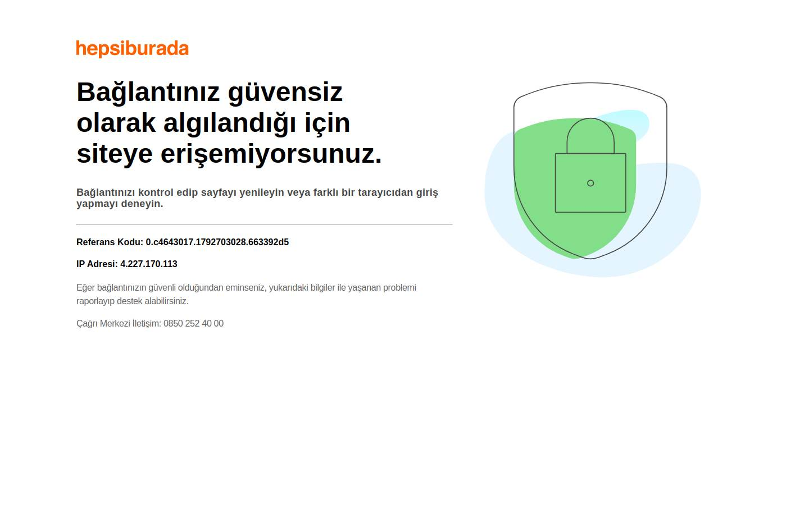
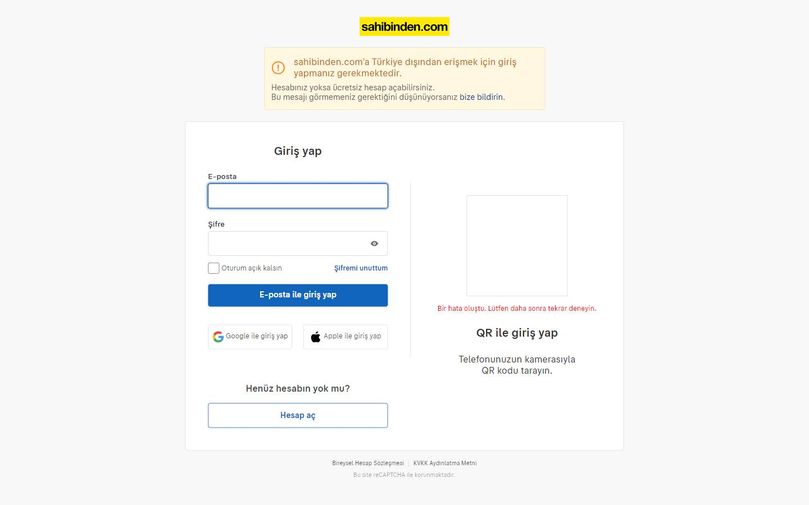
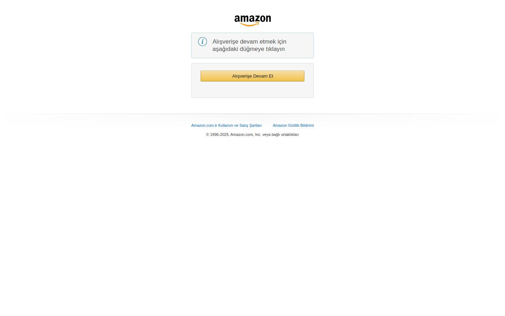
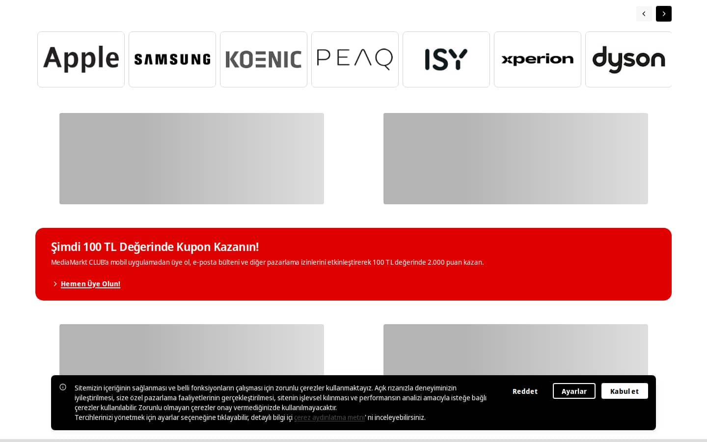
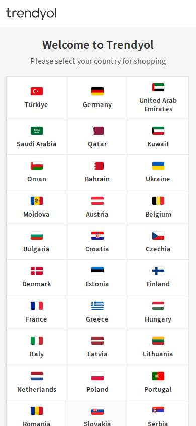
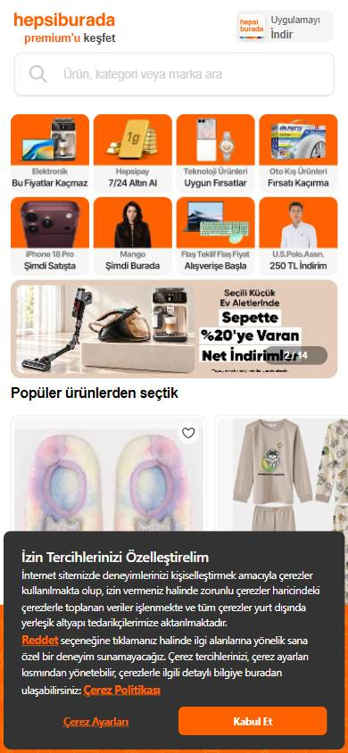
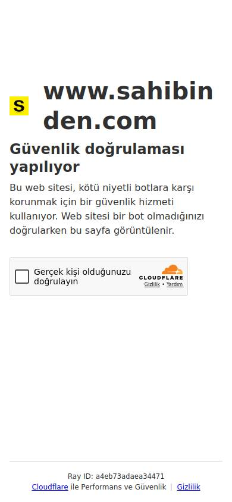
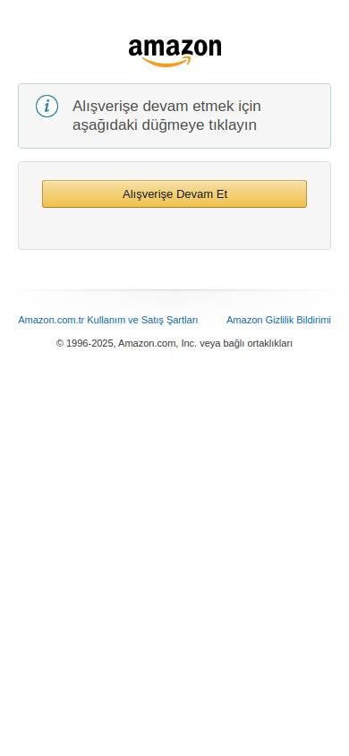
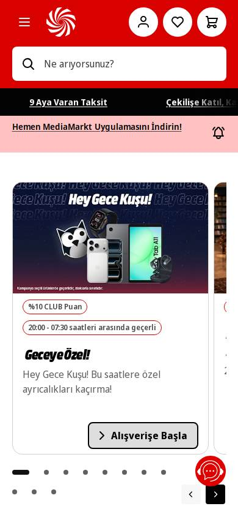

Tienda online que compite por buen precio
Los seleccionados
Los sitios más visitados de tienda online que compite por buen precio en Turquía, según estadísticas de tráfico.
¿En qué coinciden?
Cuántos líderes usan la forma más común en cada parte. En verde, donde coinciden 7 de cada 10 o más.
Comparten (0)
Decisión segura: seguí lo que hace la mayoría.
No comparten (1)
Tenés libertad para elegir.
Todavía no hay fotos suficientes para comparar: barra superior, header, buscador, menú, banner principal, botón principal, pie de página, fotos del producto, precio, botón de compra, filtros, tarjetas de producto, resumen de compra, botón de finalizar compra. Aparecen cuando las haya.
Estructura general
Antes de mirar cada parte: así ordenan sus páginas los líderes de tienda online que compite por buen precio, de arriba hacia abajo. En verde, lo que tienen 7 de cada 10 o más.
Página de inicio
Computadora
- Header2 de 2
- Menú2 de 2
- Banner principal2 de 2
- Pie de página1 de 2
Las páginas completas (deslizá)





Celular
- Header2 de 2
- Menú1 de 2
- Banner principal2 de 2
- Pie de página2 de 2
Las páginas completas (deslizá)





Logo
Dónde va la marca.
Acá podés elegir con libertad
Los líderes no se ponen de acuerdo en logo: ninguna forma llega a 7 de cada 10. Abajo ves cómo lo hace cada uno.
Computadora
Todavía no hay fotos suficientes de esta parte en computadora.
Celular
Así lo resuelve cada líder (deslizá para ver todos)
Lo que tienen en común
- Forma
- esquinas rectas
- Borde
- sin borde
Lo que cambia entre ellos
- Posición
- cada uno lo ubica en un lugar distinto
- Tamaño
- muy distinto de un sitio a otro
- Color
- algunos usan fondo claro y otros oscuro o de color
- Letra
- algunos con letra grande y otros chica
- Cerca de
- el buscador
Cuántos coinciden en cada aspecto
De los 3 líderes que tienen esta parte. En verde, donde coinciden 7 de cada 10 o más.